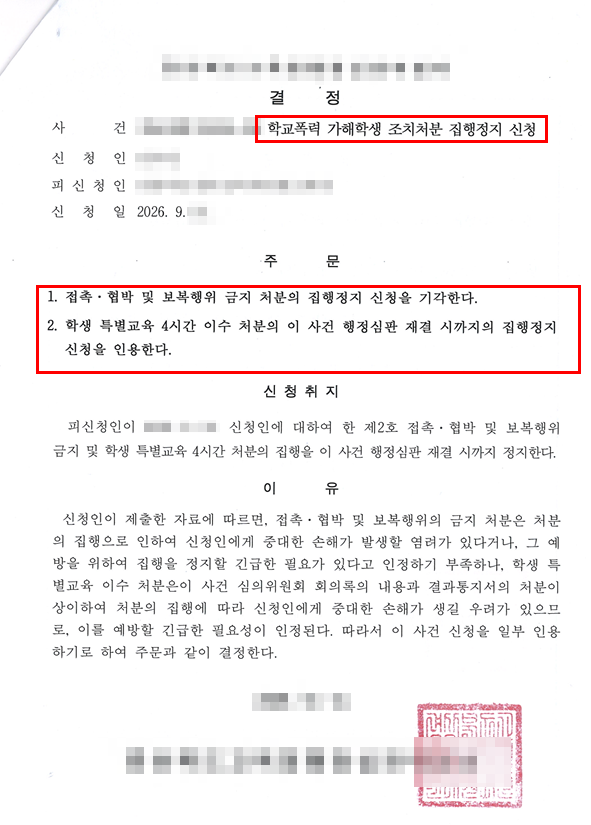

핵심 결과
학교폭력 가해학생 조치처분에 대해 행정심판과 함께 집행정지를 신청했습니다.
접촉·협박·보복행위 금지 처분에 대한 신청은 기각됐지만, 학생 특별교육 4시간 이수 처분은 행정심판 재결 때까지 집행정지가 인용됐습니다.
신청 전부가 받아들여진 것은 아니므로 결과를 일부 인용으로 정확하게 표시합니다.
| 구분 | 내용 |
|---|---|
| 사건 분야 | 학교폭력·행정심판 |
| 신청 내용 | 가해학생 조치처분 집행정지 |
| 기각 부분 | 접촉·협박·보복행위 금지 처분 |
| 인용 부분 | 학생 특별교육 4시간 이수 처분 |
| 최종 결과 | 집행정지 일부 인용 |
| 정지 기간 | 행정심판 재결 시까지 |
사건 개요
의뢰인은 학교폭력 사안과 관련해 접촉·협박·보복행위 금지 및 학생 특별교육 4시간 이수 처분을 받았습니다.
처분의 적법성과 타당성을 다투기 위해 행정심판을 청구하면서, 재결이 나오기 전에 처분이 먼저 집행될 경우 회복하기 어려운 손해가 생길 수 있다는 이유로 집행정지를 함께 신청했습니다.
집행정지는 본안인 행정심판의 최종 결론을 미리 정하는 절차는 아닙니다. 처분을 당장 집행해야 할 공익상 필요와 신청인이 입을 손해를 비교해, 최종 판단 전까지 집행을 잠시 멈출 필요가 있는지를 판단합니다.
결정 내용
결정기관은 접촉·협박·보복행위 금지 처분에 대한 집행정지 신청은 기각했습니다.
반면 학생 특별교육 4시간 이수 처분은 회의록 내용과 처분 경위 등을 고려할 때, 처분이 먼저 집행되면 신청인에게 중대한 손해가 생길 우려가 있다고 판단했습니다.
또한 집행을 정지해도 공공복리에 중대한 영향을 미칠 우려가 있다고 보기 어렵다고 판단해, 행정심판 재결 때까지 특별교육 처분의 집행을 정지했습니다.
최종 결과: 일부 인용
접촉·협박·보복행위 금지 조치의 집행정지는 기각됐지만, 학생 특별교육 4시간 이수 처분은 행정심판 재결 시까지 집행이 정지됐습니다.
이번 결정의 의미
이번 결정은 모든 학교폭력 조치가 정지된 사례는 아닙니다.
다만 여러 조치가 함께 내려진 경우 각 조치의 성격과 즉시 집행으로 생길 손해를 구분해 주장하면, 일부 조치에 대해서는 본안 판단 전까지 집행을 멈출 수 있음을 보여줍니다.
특히 집행정지 신청에서는 단순히 처분이 부당하다고 주장하는 것만으로 부족합니다. 처분이 먼저 집행되면 어떤 손해가 생기는지, 나중에 본안에서 이기더라도 그 손해를 되돌리기 어려운 이유가 무엇인지 구체적으로 설명해야 합니다.
주요 대응
1. 각 조치의 효과를 나눠 검토했습니다
여러 조치를 하나로 묶지 않고, 접촉금지 조치와 특별교육 이수 처분이 신청인에게 미치는 영향을 각각 구분했습니다.
2. 즉시 집행으로 생길 손해를 설명했습니다
행정심판 결론이 나오기 전에 특별교육을 이수하면 나중에 처분이 취소되더라도 이미 이행한 조치를 되돌리기 어렵다는 점을 구체화했습니다.
3. 회의록과 처분 자료를 함께 검토했습니다
학교폭력대책심의위원회 회의록과 결과통지서 등 처분의 근거가 된 자료를 확인해 집행정지가 필요한 부분을 선별했습니다.
자주 묻는 질문
| 질문 | 답변 |
|---|---|
| 집행정지가 인용되면 처분이 취소된 것인가요? | 아닙니다. 본안인 행정심판 결과가 나올 때까지 처분의 집행을 잠시 멈추는 결정입니다. |
| 여러 조치 중 일부만 정지될 수 있나요? | 가능합니다. 각 조치의 성격과 손해를 따로 판단해 일부는 인용되고 일부는 기각될 수 있습니다. |
| 집행정지 신청만 하면 처분이 자동으로 멈추나요? | 아닙니다. 인용 결정이 내려져야 집행이 정지되므로, 처분의 이행 시기와 신청 일정을 빠르게 확인해야 합니다. |
| 기각된 부분이 있으면 실패한 사건인가요? | 신청 전부가 인용된 것은 아니지만, 필요한 조치 일부의 집행을 실제로 멈췄으므로 결과를 일부 인용으로 평가할 수 있습니다. |
| 어떤 자료가 필요한가요? | 조치결정 통지서, 심의위원회 회의록, 학교의 이행 안내와 즉시 집행으로 생길 손해를 설명할 자료가 필요합니다. |
결론
학교폭력 조치에 불복할 때는 행정심판만 청구하고 기다리는 것으로 충분하지 않을 수 있습니다.
조치가 먼저 이행되면 되돌리기 어려운 손해가 예상되는 경우에는 집행정지를 함께 검토해야 합니다. 여러 조치가 내려졌다면 각 조치의 효과와 긴급성을 나눠 주장하는 것이 중요합니다.
강성수 변호사는 처분서와 회의록을 직접 검토해 행정심판과 집행정지 신청의 범위를 정리합니다.
이 글은 일반적인 법률 정보 제공을 위한 자료이며, 개별 사건의 결과를 보장하지 않습니다. 구체적인 대응은 사실관계와 증거에 따라 달라질 수 있습니다.